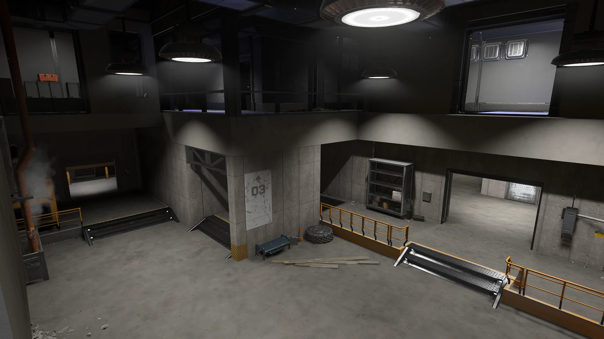
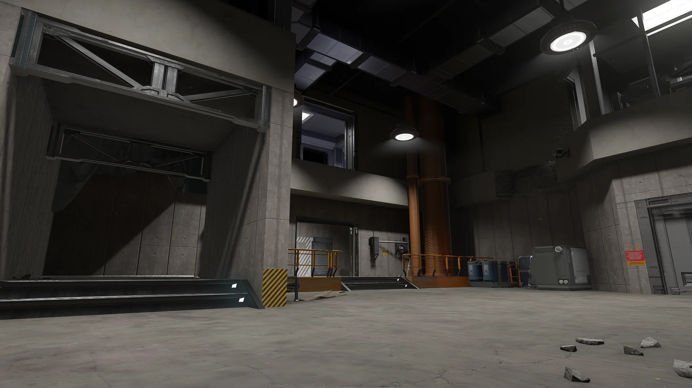
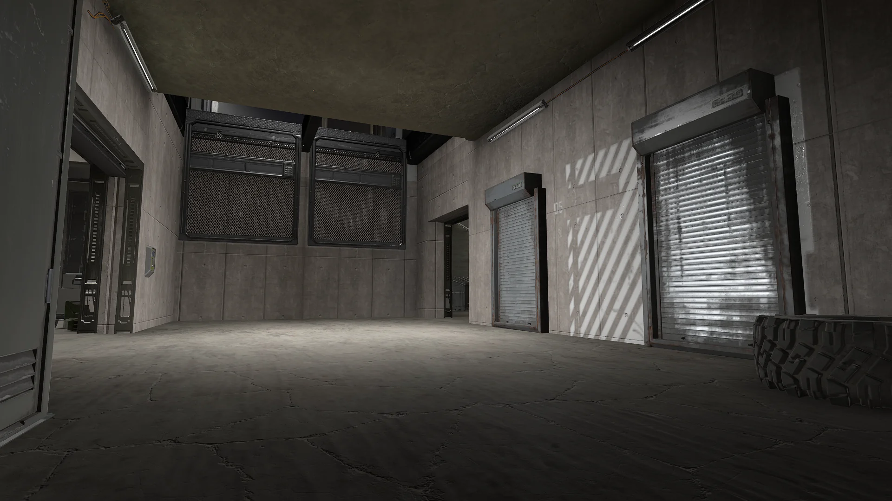
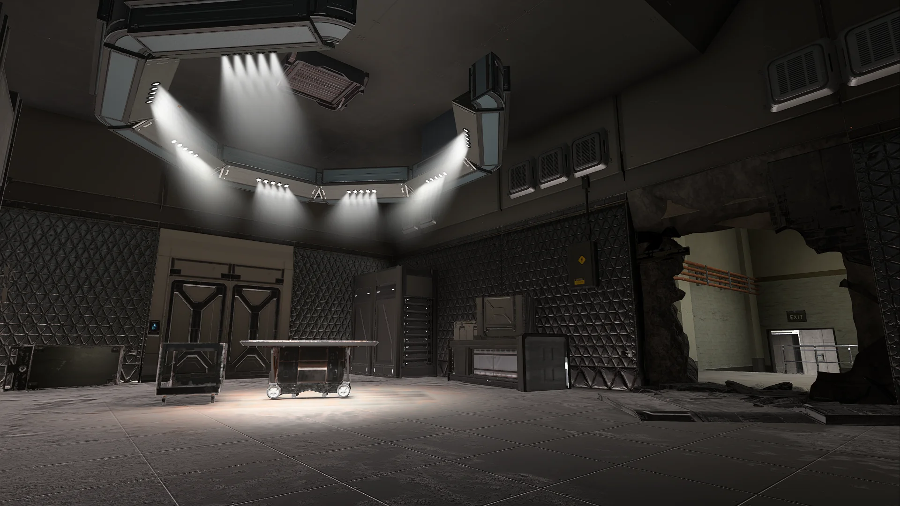
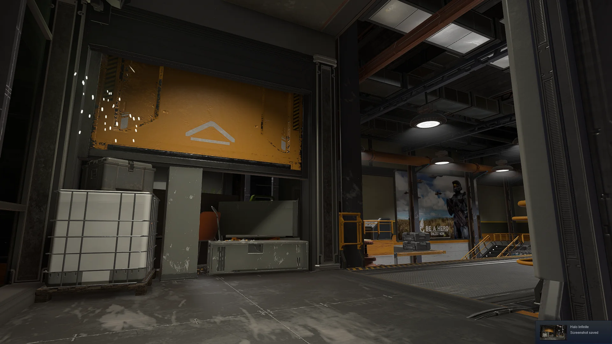
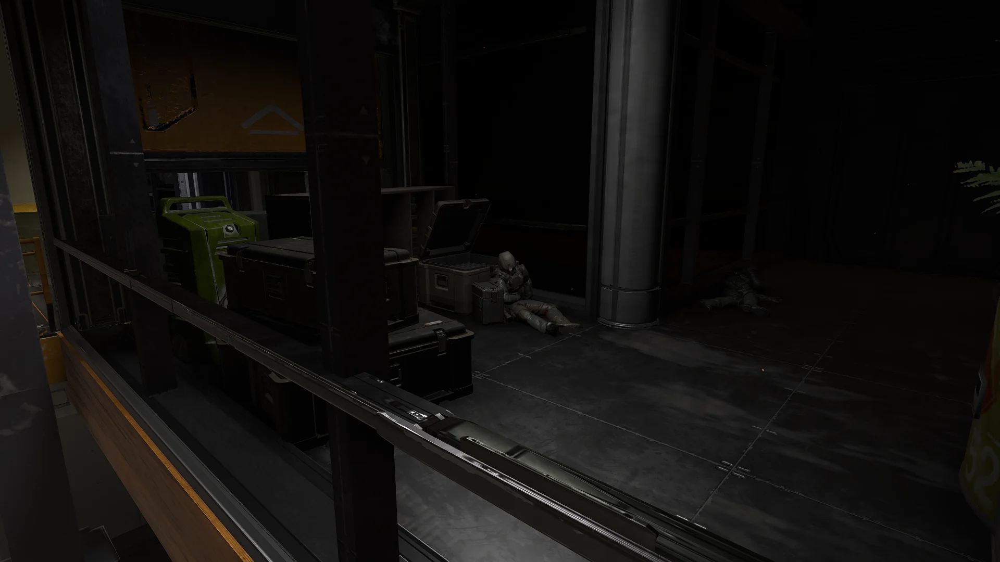
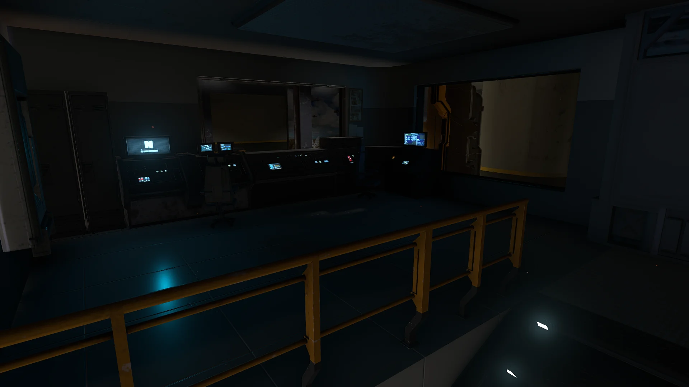
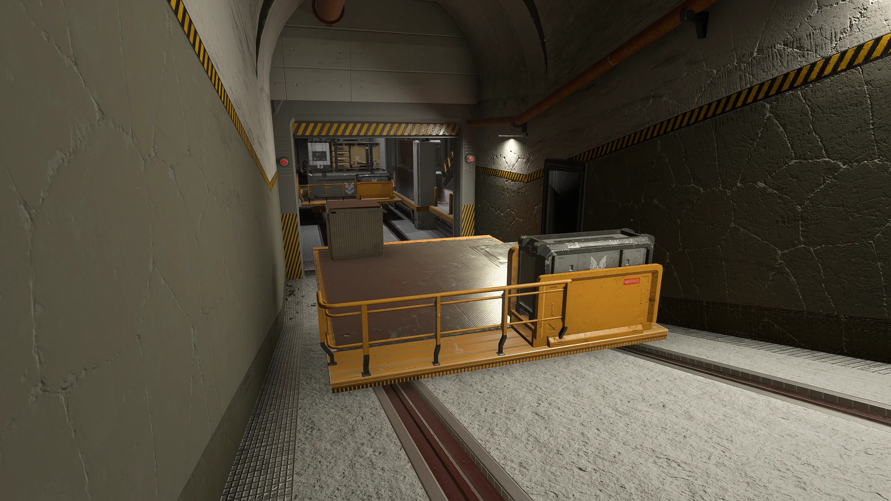
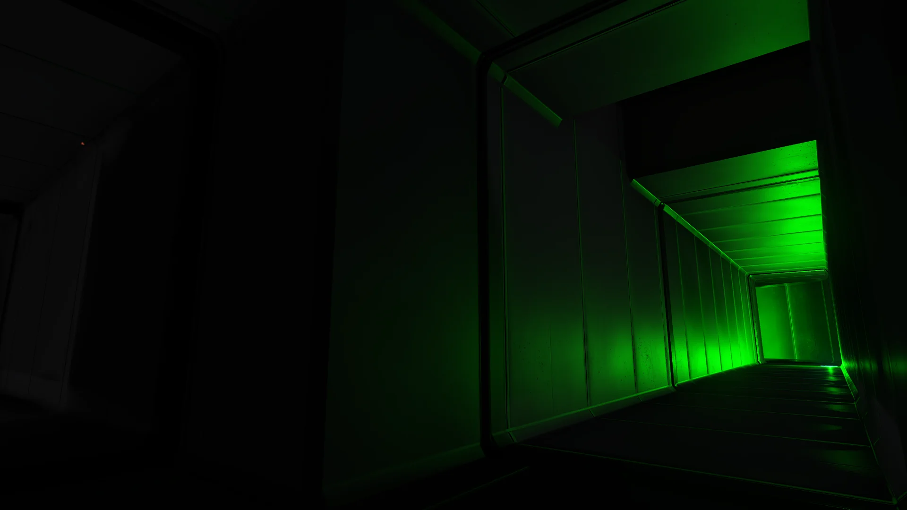
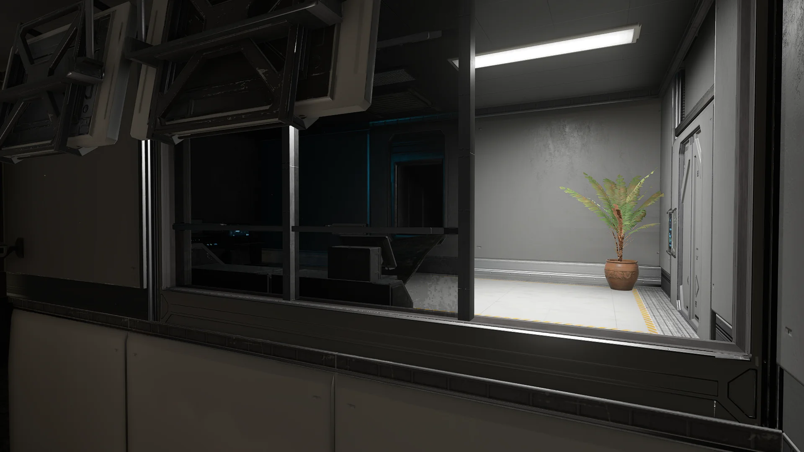

Overdose

- Platform:Halo Infinite Forge
- Genre:FPS, Zombie Survival
- Solo Project
Overdose is a recreation of Combat Arms' original map, using Halo Infinite's UGC tool, "Forge". The level was entirely built using primitive shapes & Halo Infinite's stock assets over the course of a month (~300 hours). References for the project were numerous different Youtube videos showcasing gameplay of the map (Unlike Junk Flea, where a more precise and complex process was used—explained in more detail within its own section below).
For this specific level, a collection of scripts were "coded" using Forge's built-in node scripting system called Script Brain. Examples of the developed systems can be found further below in the article.
Gameplay
Supported by the scripts shown in in the scripting section, the basis of this map + game mode combo is for Survivors to outlive the infected. They can accomplish this objective either by surviving until the round's end, or by exterminating all of the infected. The infected are chosen at random at the start of every round, and those Alpha infected eventually "turn" after a short grace period. Unlike Vanilla Halo infection where infection forces a respawn, I've scripted a system which dynamically infects players where they stand to simulate Combat Arms' Quarantine mode. This instills paranoia and lack of trust in each player during pre-round, while also groups to split evenly throughout the map until the infected are turned.
The map contains defensible areas, several hiding spots and obstacles which the survivors can utilize in order to get away from the infected, or even set up traps. Once there is 70 seconds left to the round, a 10 second alert rings which then leads to saferooms unlocking. If survivors can manage to reach those rooms, they can be locked from within to aid in surviving the last minute of the round. If enough infected are still standing, fortifications can be broken through with relative ease - so it's a decent idea to ensure that you have enough explosives saved for them.
Gallery










Scripting
Halo Infinite's Forge mode includes a node scripting tool called "Script Brain". It consists of various event listeners, triggers, variables and tons of other settings. For Overdose specifically, many systems were scripted to emulate the gameplay experience found in Combat Arm's Quarantine game mode.
Unfortunately as contextual player damage events were and still aren't available in Forge, it was impossible to create a bullet knockback effect due to being unable to get the aggressor's aiming vector to control the knockback direction. Instead, a health-polling script was written in order to slow down zombies when their health had changed between ticks (damaged). The same method was utilized for zombification in order to produce an "in-place" zombification system, not requiring the killing and respawning of a human player to turn them into a zombie. This however had the unfortunate side-effect of turning off self-damage from sources such as grenades, or even environmental hazards like nerve gas in the ventilation systems meant to discourage highly advantageous camping spots -- though it is less of an issue due to bullets not knocking back in this version thus not resulting in an endless standoff in the vents with humans cycling "shifts" while others reload.
This however still meant that this version of the map was one which did not fall completely in line with my intended vision of the game mode, thus a final version is still in progress until 343 includes an "On Player Damaged" event node in their Forge development kit. If and when one is included, most of the scripting for the level would be reworked to function with said new and better system.